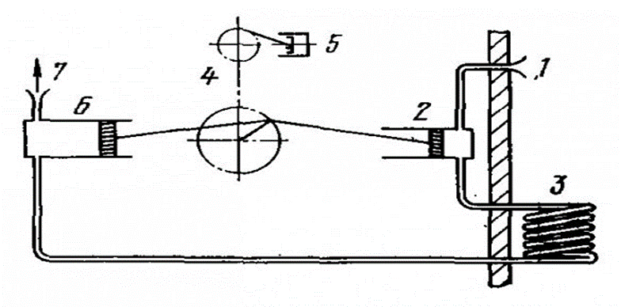
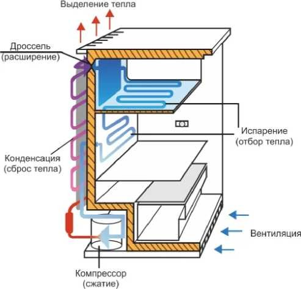
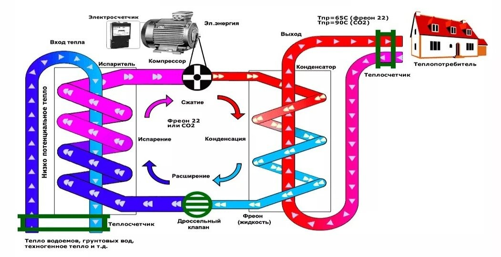

Для раскрытия первого принципа энергоэффективного дома рассмотрим принцип работы теплового насоса. Тепловой насос не производит тепло, а именно собирает низкопотенциальное тепло из земли, воды или воздуха и преобразует его в тепло, пригодное для обогрева помещения.
Тепловой насос в 1852 году изобрел Вильям Томпсон. Свое изобретение он называл «умножитель тепла»: оно показывало, как холодильную машину использовать в отопительных целях.
В основе работы теплового насоса лежит обратный термодинамический цикл французского инженера Сади Карно, который в 1824 году впервые дал теоретическое объяснение работы тепловых машин.
В основе работы теплового насоса лежит обратный термодинамический цикл французского инженера Сади Карно, который в 1824 году впервые дал теоретическое объяснение работы тепловых машин. Основное положение теории С. Карно, впоследствии получившее название принципа Карно, состоит в том, что для получения работы в тепловой машине необходимы два источника теплоты с разными температурами. Цикл Карно - обратимый круговой процесс, в котором при протекании процессов по часовой стрелке совершается наиболее полное превращение теплоты в работу или при протекании процессов против часовой стрелки - работы в теплоту (обратный цикл Карно). Для цикличной работы двигателя окружающая среда выступает в качестве холодного источника теплоты, и наоборот в обратном цикле Карно окружающая среда является горячим источником теплоты и используется в работе холодильных машин и тепловых насосов. Принцип работы тепловых насосов основан на физических явлениях:
запасом тепловой энергии обладает любое тело с температурой выше нуля и ни одно физическое тело не может достичь температуры абсолютного нуля. Если охладить это тело, освобождается определенное количество энергии, которое можно «забрать». Например, при охлаждении пяти литров воды с 10 до 0 °С выделится 1,9 МДж тепловой энергии;
при расширении/испарении вещество поглощает тепловую энергию, а когда конденсируется при сжатии – выделяет тепло или отдаёт его. Другими словами, при испарении температура жидкости понижается, а конденсация пара сопровождается повышением температуры жидкости.
когда давление меняется, меняется и температура испарения (конденсации) вещества - чем выше давление, тем выше температура и наоборот. Например, в кастрюле-скороварке за счет герметизации создается высокое давление, и пища готовится быстрее, чем обычно (давление в ней повышается, а вслед за этим повышается и температура кипящей воды) и наоборот в горах, где атмосферное давление ниже, чтобы сварить пищу, требуется больше времени (на высоте 3000 м вода кипит при 90°С).
Эти физические явления положены в основу работы теплового насоса. Современный тепловой насос, аналогично холодильнику «вытягивает» тепло из внешней среды (воздух, вода, земля) передавая его в систему отопления. При этом получается, что тепло от более холодного источника переносится к более нагретому. Работа любого теплового насоса делится на три этапа: сбор тепла из окружающей среды - повышение температуры собранного тепла - передача тепла в систему отопления и горячего водоснабжения. В тепловых насосах (холодильных установках) количество теплоты увеличивается (или уменьшается) за счёт обратимых фазовых переходов (например, парообразование - конденсация). Тепловой насос — это компактная установка, позволяющая концентрировать низкотемпературное тепло и переносить его от теплоносителя с низкой температурой (4-5 °С) к теплоносителю с более высокой температурой (до 80 °С). В основе конструкции любого теплового насоса лежат теплообменники, компрессор, испаритель и расширительный клапан. Очень часто принцип работы теплового насоса сравнивают с работой обычного бытового холодильника. Функция бытового холодильника сводится к охлаждению продуктов, находящихся в теплоизолированной камере, откуда тепло «откачивается» (отбирается кипящим в теплообменнике-испарителе хладагентом) и через теплообменник-конденсатор «выбрасывается» в помещение (задняя стенка холодильника довольно тёплая на ощупь). Поэтому можно сказать, что холодильник не только охлаждает продукты, но и нагревает помещение .
Работа воздушного теплового насоса основана на циркуляции в замкнутом контуре хладагента - рабочая жидкость, имеющая особые термодинамические свойства (способность закипать при отрицательных температурах от -150 до -30°С). У тепловых насосов, аккумулирующих полученное из воды или почвы тепло используют в качестве посредника не хладагент, а пропиленгликоль, спирт или водно-гликолевая смесь, и передают его в испаритель установки. Хладагент доводится до кипения и, испаряясь, отнимает теплоту у охлаждаемого тела, понижая его температуру. В качестве хладагента обычно выступает фреон, так как он обладает низкой температурой кипения, равной -150°С. В тепловом насосе главным становится теплообменник, с которого тепло «снимается» и используется для обогрева дома, а второстепенная «морозилка» размещается за пределами здания, поэтому тепловой насос — это холодильник, наоборот. Если холодильник создаёт низкую температуру и замораживает продукты, то в тепловом насосе теплообменник, с которого сбрасывается тепло, используется для нагревания помещения. Оборудование работает в том же режиме, но теперь его функция не снижение температуры и охлаждение, а повышение температуры и отопление. Тепло воздуха, воды или земли требуется для того, чтобы вскипятить хладогент и превратить его в пар. В том месте откуда мы тепло забираем необходимо обеспечить расширение рабочего вещества (или переход из жидкости в газ), и оно поглотит при этом из окружающего воздуха тепло. А в том месте, где необходимо тепло отдать - должно быть обеспечено сжатие или переход из газа в жидкость. Теплоноситель движется по грунту или воде, в процессе «снимая» тепло и повышая свою температуру на несколько градусов. В теплообменнике теплоноситель отдает накопленное тепло хладагенту, тот становится паром, поступает в компрессор, где поднимается его температура. В этом виде он поставляется в конденсатор, отдает тепло теплоносителю ОС дома, и охладившись, снова превращается в жидкость и поступает в испаритель, где нагревается от новой порции нагретого теплоносителя
. Жидкий хладагент вытесняется через дросселирующее устройство в область низкого давления, малая часть его быстро испаряется, охлаждая трубки и остальную часть испарителя до температуры ниже температуры кипения (для заданного давления) хладагента. Оставшаяся жидкость испаряется в «холодном» теплообменнике, забирая тепло и, соответственно, охлаждая среду, имеющую температуру несколько выше, чем температура кипения для этого давления. Давление при этом не растёт, так как постоянно часть газа откачивается компрессором. Далее компрессор, откачивая газообразный хладагент, сжимает его до гораздо большего давления и подаёт на трубки конденсатора. В конденсаторе часть хладагента быстро конденсируется на трубках, отдавая при конденсации теплоту и нагревая их до температуры точки росы (для данного давления). После этого основная часть хладагента без препятствий попадает в «горячий» теплообменник, в котором обменивается теплом со средой, имеющей температуру ниже точки росы (температура среды, окружающей конденсатор, должна быть ниже температуры жидкого хладагента). Газ при этом весь конденсируется, отдавая тепло в помещение. компрессор постоянно подгоняет новые порции газа, компенсируя сконденсированную часть, тем самым сохраняя необходимое давление. Для того чтобы жидкий хладагент начал испаряться, необходимо снизить его давление. Это осуществляется с помощью дроссельного клапана (регулирующего вентиля), на входе которого давление высокое, а на выходе — низкое. Таким образом, получается замкнутый цикл теплового насоса, который с помощью испарителя отбирает тепло из более холодной среды и с помощью конденсатора отдаёт его среде с более высокой температурой. Весь процесс идёт за счёт разницы давлений, обеспечиваемой компрессором и дросселирующим устройством .
«Холодная» и «горячая» части мало отличаются друг от друга и при желании меняются функциями, если запустить работу компрессора в обратную сторону: зимой тепловой насос передаёт тепло в помещение, нагревая его, а летом тепловой насос извлекает тепло из помещения (дома) и передаёт его через обменник в обратном направлении. Данное свойство применяется во многих кондиционерах. Теплонасосная технология является основой энергоэффективного здания в том числе и потому, что в нее можно интегрировать другие источники тепловой энергии, например, солнечный коллектор – устройство с помощью которого происходит преобразование солнечной энергии в тепловую. Тепловой насос в сочетании с солнечной панелью позволяет обеспечить высокую энергоэффективность, большую финансовую экономию, и устойчивую работу системы в течение всего года. В летний и переходный период, когда нет нагрузки на отопление, основной задачей солнечных коллекторов является нагрев воды в баке- аккумуляторе горячего водоснабжения. Когда температура воды в баке-аккумуляторе горячего водоснабжения соответствует заданному уровню температуры, циркуляция теплоносителя от солнечного коллектора направляется в теплообменник, предназначенный для подогрева теплоносителя в грунтовом теплообменнике. Таким образом, летом аккумулируется теплота в грунте, что повышает эффективность работы тепловых насосов в отопительный период. Согласованный режим работы всех элементов системы обеспечивается средствами автоматики.